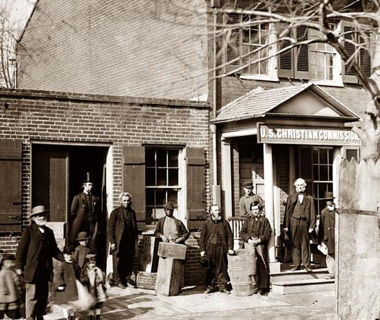
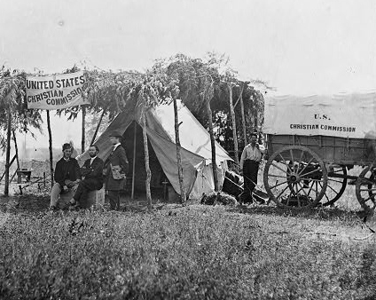

|
Reflecting both the deeply religious nature of nineteenth
century American life and a strong commitment to
voluntarism, the United States Christian Commission (USCC)
was formed to provide a variety of social services to the
men who served the Union as soldiers. Like many other
philanthropic organizations, throughout the Civil War, the
USCC mobilized civilian (and especially female) energies to
ease the burdens of the troops, in both material and
spiritual ways.
When large numbers of volunteers began to leave for the
war, many northern Christian activists became convinced that
|

The Washington office of the United States
Christian Commission
|
soldiers' lives should be made easier. In November, 1861, at
a conference in Philadelphia, George H. Stuart, a wealthy
merchant and staunch Presbyterian, was named the first
President of the newly created United States Christian
Commission. He remained President for the life of the
Commission.
The USCC's original plan was to assist the chaplains of
the armed services in their daily work. To do this, the USCC
settled on eight unifying principles: compassion,
voluntarism, benefits for the body and soul, personal
distribution and personal ministrations, nationality,
cooperation, and respect for authority. Through adherence to
these principles, the Commission believed that it could
assist in the war effort without interfering with military
authorities.
An extensive administrative organization supported the
USCC's work. There was an executive committee, station
agents and field representatives served in the field, and
the local organization was broken into branch commissions
and ladies commissions. The executive committee oversaw the
USCC's daily affairs. Initially, it was composed of only 12
members, but that number grew to 55 as the Union Army grew
and the extent of the need became apparent.
Station agents, often called ministers, oversaw the
activities of the field representatives, volunteers who
personally aided soldiers in the field. While field
representatives worked directly with soldiers, station
agents monitored USCC work for a particular army corps or a
locale near the front line. Station agents also organized
supplies, ensuring that each field representative had what
he or she needed and directing aid first to those areas that
needed it most.
The branch commissions and ladies commissions both served
as fundraising and public relations arms for the USCC.
Although their ultimate goal was the same, they each used
their own methods. Whereas the branch commissions primarily
focused on raising cash for the war effort, the ladies
commissions organized women to prepare food, clothing and
gifts for distribution to Union men. According to the 1866
final report of the USCC, the ladies commissions consisted
of 266 members in 17 states and had raised over $200,000
during the course of the War. One of the most notable
members of the ladies commissions was Annie Wittenmeyer.
Concerned about the diet of soldiers in Missouri, she
established the first kitchen in the Cumberland Hospital in
|

Though most Christian Commission volunteers did their
work on the homefront, the organization also had field offices
that trailed behind the armies. The one pictured here is in Virginia
with the Army of the Potomac.
|
Nashville, Tennessee. Wittenmeyer's diet was a vast
improvement in both health and satisfaction, providing
nutritious, tasty foods.
The backbone of the USCC, however, was its delegates, or
field representatives. These men and women went to the field
equipped with a memo book, instructions, food, bedding,
utensils, and publications of various kinds. Each delegate
worked for an average of 38 days and was responsible for all
the supplies sent to that particular spot, in addition to
giving assistance to the surgeons and chaplains where
necessary. Even though the delegates' primary
responsibilities were to assist the chaplains in their
pastoral and evangelical work, they often acted as lay
ministers, librarians, nurses, social workers, and worship
leaders. By the end of the war, more than 5,000 people had
served as delegates for the USCC.
President Lincoln's administration recognized the
positive effect of the USCC on behalf of Union troops.
Lincoln offered support to the Commission wherever possible
during the war. In addition, General Grant welcomed the
Commission and gave its members free access to his men.
The assistance provided by the USCC was invaluable. By
the end of the War, the Commission had raised over six
million dollars to benefit the Army. Delegates distributed
1.5 million Bibles and 1 million hymnals. In addition, they
preached over 58,000 sermons, held 77,000 prayer meetings,
and assisted the soldiers in writing over 92,000 letters to
their friends and families.
Source: Joan Waugh, ed., Facts on File Encyclopedia of American
History: Civil War and Reconstruction, 1856 to 1869 (New York: Facts on
File, 2003), 371-372.
|